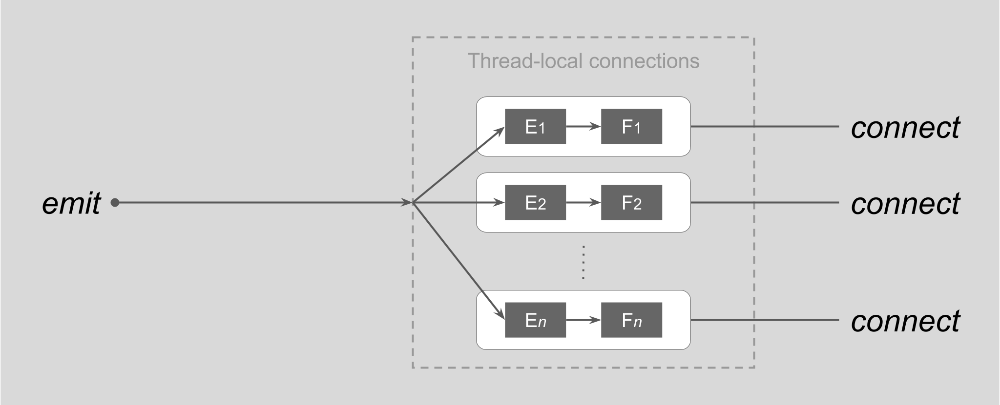
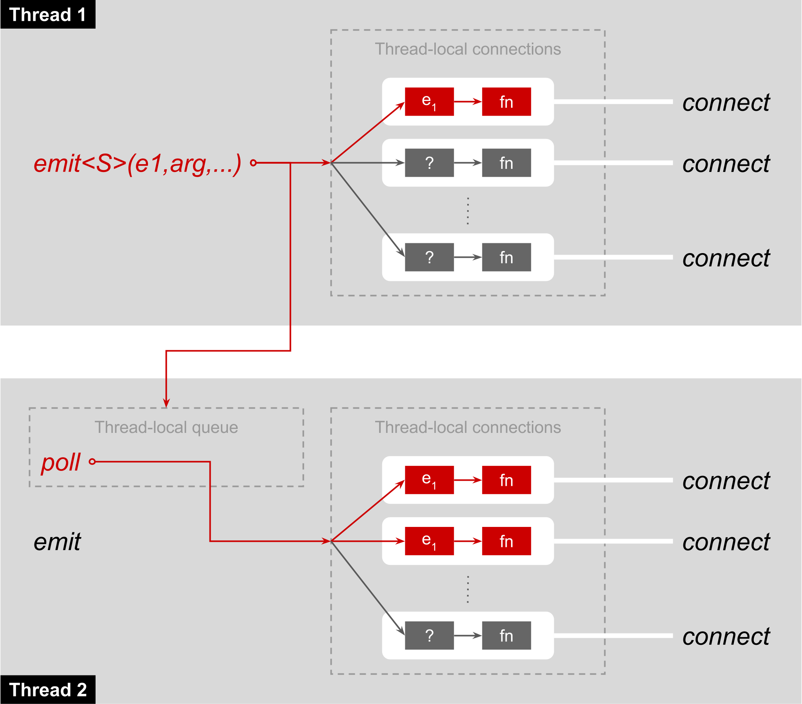

Interthread Communication Support
Boost Synapse can be used to implement interthread communication using Signals. The data structures created by connect (or translate) use thread-local storage, so by default calling emit will call only functions connected by the calling thread (and will not return until all such functions have been called in order, or one of them throws.)
The following diagram shows the connections created (by calls to connect<S>) in a single thread for a given signal type S, each connecting an emitter to a function. When emit<S>(e1,arg,...) is called, all functions connected (for S) to the given emitter e1 are called (in the order in which the connections were created):
However, it is also possible for any thread to request to receive all signals emitted by other threads, by creating its own thread_local_queue object using create_thread_local_queue.
In this case, in addition to the behavior described above, emit<S>(e1,arg,...) will capture its arguments (depending on the signature of S) and queue them into the thread_local_queue object created by any thread other than the calling thread. Each such thread must poll its own thread_local_queue regularly; this "emits" the queued objects locally and removes them from the queue (note that poll is not given an emitter or a signal type, it emits locally all queued objects, regardless of signal type or emitter).
This is illustrated by the following diagram:
A typical use case for this system is to update user interface objects with data generated by one or multiple worker threads. This way, the user interface objects themselves need not be thread-safe, because they will be updated only synchronously, at the time poll is called.
Warning:
Special care must be taken to ensure that any objects referred to by arguments passed to emit will remain valid until the time any other threads poll their thread_local_queues. For example, the following code is incorrect in the presence of thread_local_queues:
typedef struct my_signal_(*my_signal)( int * );
void
emit_my_signal( int x )
{
emit<my_signal>(&x); //Undefined behavior in the presence of thread_local_queues!
}
The problem is that the address of x may be queued into other threads' queues, and since x is local to emit_my_signal, it may be destroyed by the time these threads call poll.
Using thread_local_queue objects to asynchronously schedule synchronous function execution
The post function can be used to queue into a thread_local_queue arbitrary functions for execution at the time poll is called to emit queued signals. This feature allows critical worker threads to minimize the amount of time they consume by offloading expensive non-critical computations to another, non-critical thread. This also removes the need for synchronization, since the queued functions are executed synchronously in the thread that owns the thread_local_queue object.

 Copyright (c) 2015 by Emil Dotchevski and Reverge Studios, Inc.
Copyright (c) 2015 by Emil Dotchevski and Reverge Studios, Inc.
Distributed under the Boost Software License, Version 1.0.